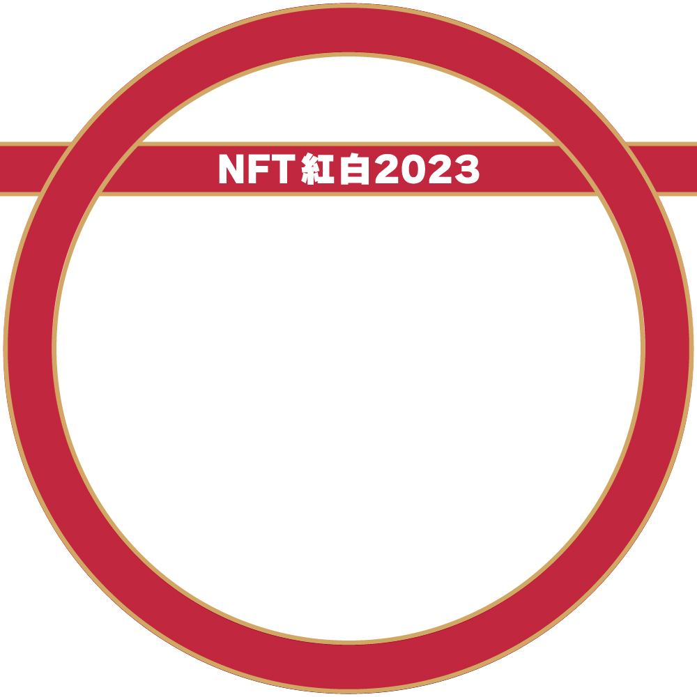
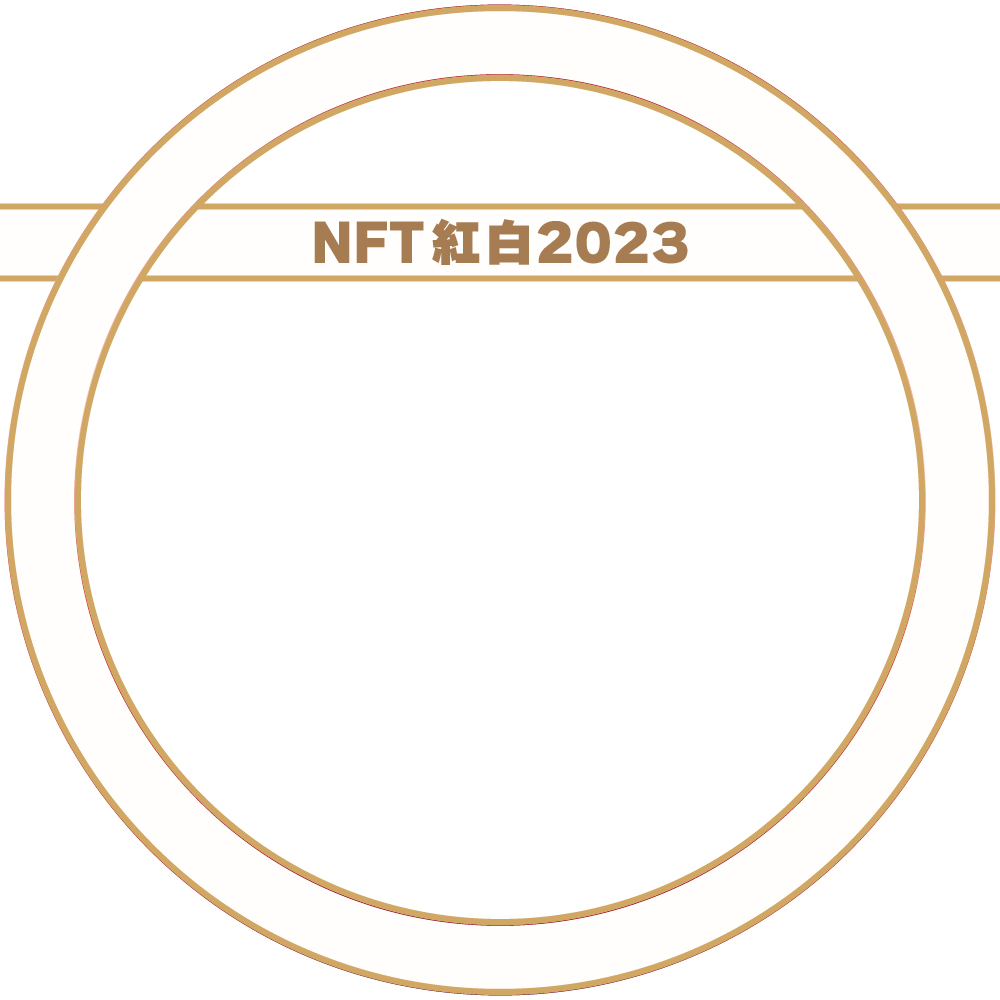
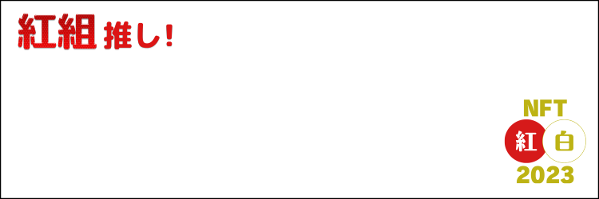
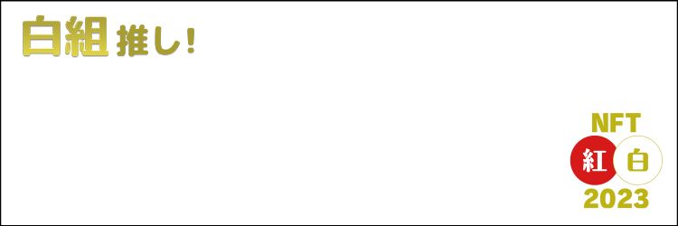

NFT紅白の楽しみ方
エントリーしてみたものの、何をしたら良いかわからない・・・
そんなお悩みをもつアナタ、そうでもないアナタ！
年末のNFTの楽しみ方を伝授します。
１ Discordに参加しよう
参加者が集うコミュニティがDiscord上にあります。
ここでは参加者の作品WIPを見せ合ったり、交流を深める
チャットなどを楽しめます。
最新情報なども発信していきます！
Discordに参加
２ アイコンリングを設定しよう。
XのアイコンをNFT紅白仕様にデコレーション！
紅白への参加がひと目で分かるので、期間中はSNSでもお祭り気分を楽しめます。
デコったーを利用して簡単に切り替えるか、配布のPNGデータをアイコンに自身で
くっつけば完成！年末の活気を味わおう！
※デコったーはXのアカウント認証が必要です。
※Xの認証マークは、アイコン画像を変えると認証が一定期間解除されます。


PNGデータ（GoogleDrive）
デコったー
X専用の推し組ヘッダーも今年は登場！
自分のヘッダーに組み合わせて、推したい組を応援しよう！


PNGデータ（GoogleDrive）
３ WIPを投稿しよう！
紅白の本線期間（12/22～29）より前でも、クリエイターはご自身の作品の
制作経過（WIP）を投稿することが可能です！
投稿する際は、ハッシュタグ【
#NFT紅白2023
】をつけてみよう！
タグを検索すれば、仲間の作品も楽しめて交流を深めることもできます。
ハッシュタグを見る
４ スペースに参加しよう！
紅白期間中は、公式のスペースが開催されます！
そこでは追加情報のアナウンスや企画の状況などを発信する予定です。
また、運営の他にも個人の方が紅白スペースをすることもあります。
参加して仲間をみつけて楽しみましょう。